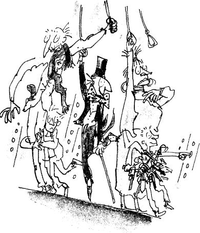

‘I’ve never seen anything like it!’ cried Mr Wonka. ‘The children are disappearing like rabbits! But you mustn’t worry about it! They’ll all come out in the wash!’
Mr Wonka looked at the little group that stood beside him in the corridor. There were only two children left now – Mike Teavee and Charlie Bucket. And there were three grown-ups, Mr and Mrs Teavee and Grandpa Joe. ‘Shall we move on?’ Mr Wonka asked.
‘Oh, yes!’ cried Charlie and Grandpa Joe, both together.
‘My feet are getting tired,’ said Mike Teavee. ‘I want to watch television.’
‘If you’re tired then we’d better take the lift,’ said Mr Wonka. ‘It’s over here. Come on! In we go!’ He skipped across the passage to a pair of double doors. The doors slid open. The two children and the grown-ups went in.
‘Now then,’ cried Mr Wonka, ‘which button shall we press first? Take your pick!’
Charlie Bucket stared around him in astonishment. This was the craziest lift he had ever seen. There were buttons everywhere! The walls, and even the ceiling, were covered all over with rows and rows and rows of small, black push buttons! There must have been a thousand of them on each wall, and another thousand on the ceiling! And now Charlie noticed that every single button had a tiny printed label beside it telling you which room you would be taken to if you pressed it.
‘This isn’t just an ordinary up-and-down lift!’ announced Mr Wonka proudly. ‘This lift can go sideways and longways and slantways and any other way you can think of! It can visit any single room in the whole factory, no matter where it is! You simply press the button… and zing!… you’re off!’
‘Fantastic!’ murmured Grandpa Joe. His eyes were shining with excitement as he stared at the rows of buttons.
‘The whole lift is made of thick, clear glass!’ Mr Wonka declared. ‘Walls, doors, ceiling, floor, everything is made of glass so that you can see out!’
‘But there’s nothing to see,’ said Mike Teavee.
‘Choose a button!’ said Mr Wonka. ‘The two children may press one button each. So take your pick! Hurry up! In every room, something delicious and wonderful is being made.’
Quickly, Charlie started reading some of the labels alongside the buttons.
THE ROCK-CANDY MINE – 10,000 FEET DEEP, it said on one.
COKERNUT-ICE SKATING RINKS, it said on another.
Then… STRAWBERRY-JUICE WATER PISTOLS.
TOFFEE-APPLE TREES FOR PLANTING OUT IN YOUR GARDEN – ALL SIZES.
EXPLODING SWEETS FOR YOUR ENEMIES.
LUMINOUS LOLLIES FOR EATING IN BED AT NIGHT.
MINT JUJUBES FOR THE BOY NEXT DOOR – THEY’LL GIVE HIM GREEN TEETH FOR A MONTH.
CAVITY-FILLING CARAMELS – NO MORE DENTISTS.
STICKJAW FOR TALKATIVE PARENTS.
WRIGGLE-SWEETS THAT WRIGGLE DELIGHTFULLY IN YOUR TUMMY AFTER SWALLOWING.
INVISIBLE CHOCOLATE BARS FOR EATING IN CLASS.
SUGAR-COATED PENCILS FOR SUCKING.
FIZZY LEMONADE SWIMMING POOLS.
MAGIC HAND-FUDGE – WHEN YOU HOLD IT IN YOUR HAND, YOU TASTE IT IN YOUR MOUTH.
RAINBOW DROPS – SUCK THEM AND YOU CAN SPIT IN SIX DIFFERENT COLOURS.
‘Come on, come on!’ cried Mr Wonka. ‘We can’t wait all day!’
‘Isn’t there a Television Room in all this lot?’ asked Mike Teavee.
‘Certainly there’s a television room,’ Mr Wonka said. ‘That button over there.’ He pointed with his finger. Everybody looked. TELEVISION CHOCOLATE, it said on the tiny label beside the button.
‘Whoopee!’ shouted Mike Teavee. ‘That’s for me!’ He stuck out his thumb and pressed the button. Instantly, there was a tremendous whizzing noise. The doors clanged shut and the lift leaped away as though it had been stung by a wasp. But it leapt sideways! And all the passengers (except Mr Wonka, who was holding on to a strap from the ceiling) were flung off their feet on to the floor.
‘Get up, get up!’ cried Mr Wonka, roaring with laughter. But just as they were staggering to their feet, the lift changed direction and swerved violently round a corner. And over they went once more.
‘Help!’ shouted Mrs Teavee.
‘Take my hand, madam,’ said Mr Wonka gallantly. ‘There you are! Now grab this strap! Everybody grab a strap. The journey’s not over yet!’
Old Grandpa Joe staggered to his feet and caught hold of a strap. Little Charlie, who couldn’t possibly reach as high as that, put his arms around Grandpa Joe’s legs and hung on tight.
The lift rushed on at the speed of a rocket. Now it was beginning to climb. It was shooting up and up and up on a steep slanty course as if it were climbing a very steep hill. Then suddenly, as though it had come to the top of the hill and gone over a precipice, it dropped like a stone and Charlie felt his tummy coming right up into his throat, and
Grandpa Joe shouted, ‘Yippee! Here we go!’ and Mrs Teavee cried out, ‘The rope has broken! We’re going to crash!’ And Mr Wonka said, ‘Calm yourself, my dear lady,’ and patted her comfortingly on the arm. And then Grandpa Joe looked down at Charlie who was clinging to his legs, and he said, ‘Are you all right, Charlie?’ Charlie shouted, ‘I love it! It’s like being on a roller coaster!’ And through the glass walls of the lift, as it rushed along, they caught sudden glimpses of strange and wonderful things going on in some of the other rooms:
An enormous spout with brown sticky stuff oozing out of it on to the floor…
A great, craggy mountain made entirely of fudge, with Oompa-Loompas (all roped together for safety) hacking huge hunks of fudge out of its sides…
A machine with white powder spraying out of it like a snowstorm…
A lake of hot caramel with steam coming off it…
A village of Oompa-Loompas, with tiny houses and streets and hundreds of Oompa-Loompa children no more than four inches high playing in the streets…
And now the lift began flattening out again, but it seemed to be going faster than ever, and Charlie could hear the scream of the wind outside as it hurtled forward… and it twisted… and it turned… and it went up… and it went down… and…
‘I’m going to be sick!’ yelled Mrs Teavee, turning green in the face.
‘Please don’t be sick,’ said Mr Wonka.
‘Try and stop me!’ said Mrs Teavee.
‘Then you’d better take this,’ said Mr Wonka, and he swept his magnificent black top hat off his head, and held it out, upside down, in front of Mrs Teavee’s mouth.
‘Make this awful thing stop!’ ordered Mr Teavee.
‘Can’t do that,’ said Mr Wonka. ‘It won’t stop till we get there. I only hope no one’s using the other lift at this moment.’
‘What other lift?’ screamed Mrs Teavee.
‘The one that goes the opposite way on the same track as this one,’ said Mr Wonka.
‘Holy mackerel!’ cried Mr Teavee. ‘You mean we might have a collision?’
‘I’ve always been lucky so far,’ said Mr Wonka.
‘Now I am going to be sick!’ yelled Mrs Teavee.
‘No, no!’ said Mr Wonka. ‘Not now! We’re nearly there! Don’t spoil my hat!’
The next moment, there was a screaming of brakes, and the lift began to slow down. Then it stopped altogether.
‘Some ride!’ said Mr Teavee, wiping his great sweaty face with a handkerchief.
‘Never again!’ gasped Mrs Teavee. And then the doors of the lift slid open and Mr Wonka said, ‘Just a minute now! Listen to me! I want everybody to be very careful in this room. There is dangerous stuff around in here and you must not tamper with it.’